Introduction
Ce projet a pour but de développer une preuve de concept. Il se base sur un précédent projet dont l'objectif était de concevoir un outil permettant de
suggérer des mots-clés lors de la rédaction d'un message sur un forum. Le travail sera basé, comme pour le précédent projet, sur un dataset constitué de 50 000 messages
provenant du forum Stack Overflow.
Les objectifs du projet sont les suivants :
- Réaliser une veille afin d'identifier des modèles permettant d'améliorer les résultats du précédent projet.
- Évaluer ces modèles.
- Réaliser un dashboard pour faire une démo du nouveau concept.
Retrouvez tout le code et les fichiers de ce projet sur mon GitHub
Dataset utilisé
50 000 messages et les mots-clés associés ont été récupérés sur Stack Overflow, en prenant soin de ne pas récupérer de données personnelles
concernant les auteurs pour éviter les problématiques liées au RGPD.
Les messages sont constitués d'un titre et d'un corps, qui seront fusionnés pour constituer nos documents, pour lesquels nous aurons des mots-clés réels,
c'est-à-dire ceux qui ont été déterminés par les auteurs des messages.
Afin de nous assurer de la bonne qualité de nos données de travail, les messages sont récupérés en respectant certains critères, comme par exemple le score du message, la réputation de l'auteur, etc.
Récupération des données via le Stack Data Exchange Explorer
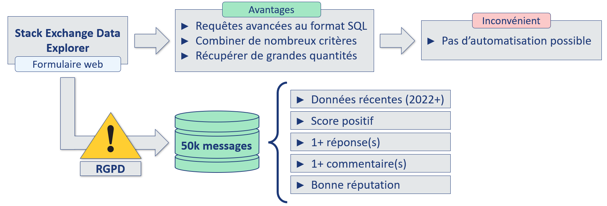
La requête SQL suivante a été utilisée afin de récupérer les 50 000 messages (et leur tags associés) de notre dataset :
SELECT TOP(50000) posts.id,
posts.creationdate,
title,
body,
tags,
users.reputation,
-- Réputation moyenne des users avec les critères actuels
(SELECT Avg(reputation)
FROM users) AS moyenne_reputation
FROM posts
-- Jointure pour récupérer la réputation des users
JOIN users
ON posts.owneruserid = users.id
WHERE posts.creationdate BETWEEN CONVERT(DATETIME, '2022-01-01') AND
CONVERT(DATETIME, '2023-12-31')
AND posts.score > 0 -- Questions avec un score positif
AND posts.answercount > 0 -- Au moins une réponse
AND posts.commentcount > 0 -- Au moins un commentaire
AND users.reputation >= 91 -- Soit la réputation moyenne sur cette période avec ces critères
Différents traitements ont ensuite été réalisés sur ces documents (suppression des balises HTML, uniformisations des tags, etc.), ils sont détaillés dans mon article sur le précédent projet sur lequel ce travail est basé.
Nouveaux modèles
Afin d'identifier de nouvelles approches, il est important de consulter des sources reconnues.
En voici quelques-unes pour exemple :
- Arxiv
- FastML
- Machine Learning Mastery
- Towards Data Science
- KDnuggets :
- import AI :
- MIT tech review :
- MIT news ML
- Data Elixir (newsletter)
- Data Science Weekly (newsletter)
- Extraction de mots-clés avec KeyBERT.
- Prédiction de mots-clés avec le LLM Mistral 7B.
Premier modèle : KeyBERT
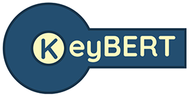
KeyBERT est un modèle créé par Maarten Grootendorst en 2020 qui permet d'extraire les mots-clés d'un document textuel.
Il s'agit d'un modèle non supervisé, ne nécessitant pas d'entraînement ni de traitement préalable. Il est simple à implémenter et nécessite peu de ressources pour fonctionner.
Il est réputé comme performant et est modulable. Il a actuellement plus de 3000 ★ et 300 forks sur GitHub,
est cité dans 8 études sur Arxiv
et a fait l'objet d'un article sur Towards Data Science.
Pour ne rien gâcher, il dispose d'une documentation très complète.
Le fonctionnement de KeyBERT est basé sur un concept assez simple, mais très efficace :
- Le modèle prend en entrée un document texte, sans traitement préalable particulier.
- Le document est tokénisé, par défaut avec CountVectorizer de Scikit-Learn.
- Des embeddings sont extraits, d'une part pour chaque mot, d'autre part pour le document entier. Par défaut un modèle dérivé de BERT est utilisé, mais il peut être remplacé par tout autre modèle capable de réaliser ce type d'embedding.
- Les embeddings de chaque token, autrement dit de chaque mot-clé candidat, sont comparés avec l'embedding du document. Par défaut, la similarité cosinus est utilisée.
- Il ne reste plus alors qu'à sélectionner les tokens avec le plus de similarité avec le document complet, ils représenteront les mots-clés les plus pertinents pour définir le document.
Fonctionnement de KeyBERT
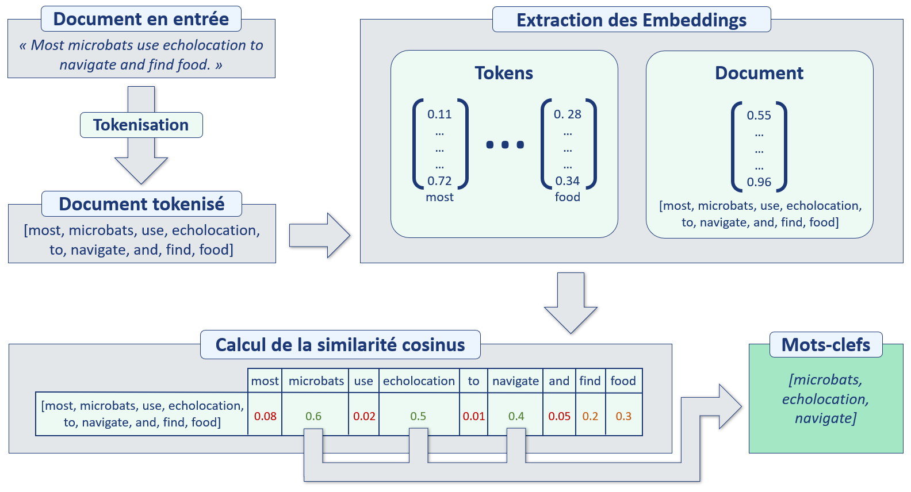
Mise en œuvre : baseline et KeyBERT
Comme mentionné précédemment, notre baseline sera basée sur NMF, approche testée dans le cadre de mon précédent projet. Nous allons voir que cette approche est assez fastidieuse, elle comporte de nombreuses étapes.
Fonctionnement de la baseline NMF
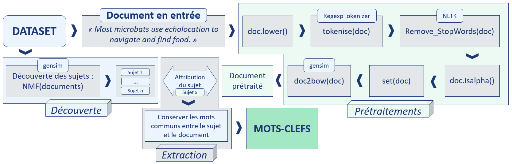
Cette approche nécessite une phase de découverte, de prétraitements et d'extraction.
Fonctionnement de KeyBERT
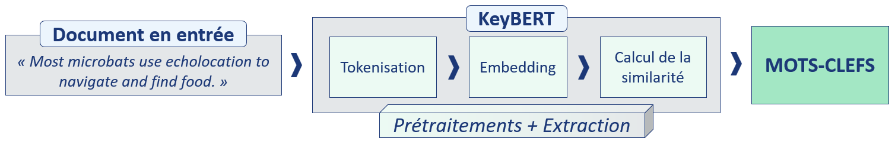
KeyBERT gère les prétraitements et l'extraction, aucune phase de découverte n'est nécessaire.
Pour fonctionner, NMF a besoin de passer par une étape de découverte des sujets, durant laquelle tout le corpus (ensemble des documents) va être exploré. KeyBERT n'a pas besoin de cette étape et peut donc fournir des mots-clés à partir d'un seul document, sans plus de contexte : cet avantage est considérable.
Évaluation des performances
Il va falloir définir une méthode d'évaluation des performances pour pouvoir comparer KeyBERT avec notre baseline.
Nous allons nous concentrer sur deux métriques métier :
- « Au moins un tag commun » : avec les tags réels, ceux indiqués par les auteurs des messages.
- « Absence de prédiction » : est-ce que le modèle est capable de toujours fournir une prédiction ?
Méthode d'évaluation des performances
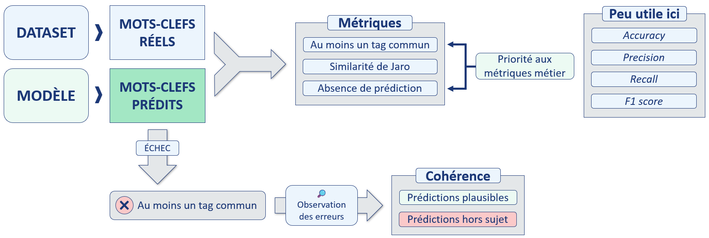
Baseline Vs KeyBERT : les résultats
Comparons les résultats obtenus en utilisant la méthode d'évaluation des performances précédemment décrite.
Méthode d'évaluation des performances
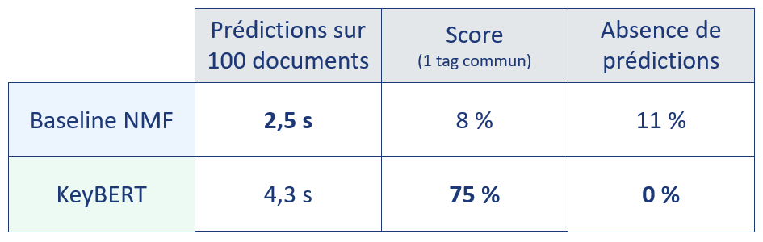
La première colonne indique le temps nécessaire pour réaliser les prédictions sur 100 documents.
Notons que les temps de prédictions mentionnés ci-dessus n'incluent pas la durée nécessaire à la découverte des sujets, qui n'est pas négligeable. Rappelons que cette étape n'est présente que pour la baseline NMF.
Passage en revue en cas d'échec de prévision
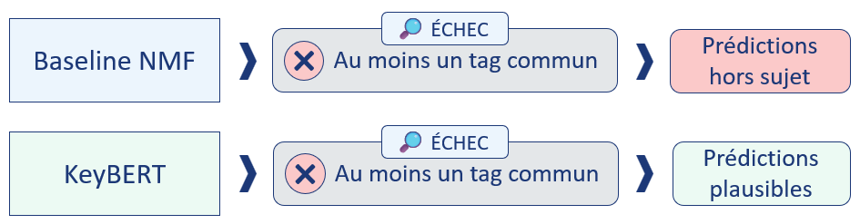
« Échec » sous-entend ici : aucun tag en commun avec les tags réels.
Les résultats sont sans appel : KeyBERT est bien plus performant que notre baseline, son fonctionnement est bien plus simple et nécessite moins de ressources pour fonctionner.
Wordclouds des tags réels et prédits sur les documents testés avec KeyBERT
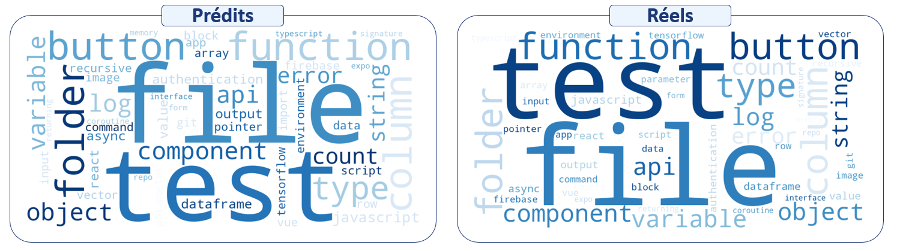
Grande similitude entre les tags réels et prédits.
Ce nouveau modèle KeyBERT apporte des résultats très satisfaisants, mais est-il possible d'améliorer encore ces résultats et à quel coût ? C'est ce que nous allons voir avec l'approche suivante.
Aller plus loin : utiliser un Large Language Model (LLM)
Pour cette approche, nous allons utiliser le LLM Mistral 7B, un récent grand modèle de langage développé par l'entreprise Française Mistral AI.
Ce modèle comporte 7 milliards de paramètres, une taille restreinte par rapport à ses concurrents.
En tant que modèle de traitement du langage naturel, Mistral est conçu pour comprendre et générer du texte de manière contextuelle, ce qui va ici nous servir à générer des mots-clés résumant au mieux nos documents.
Plus exactement, nous utiliserons la version quantifiée mistral-7b-instruct-v0.1.Q5_K_M, nécessitant moins de ressources pour fonctionner, au prix d'une réduction de sa précision.
Concrètement, une version quantifiée signifie que ses poids ont été simplifiés, arrondis (moins de nombres après la virgule).
Le concept est on ne peut plus simple : il suffit de fournir le contenu du document au modèle et lui demander de nous fournir des mots-clés pertinents, le tout via un « prompt ».
Prédiction de mots-clés avec Mistral
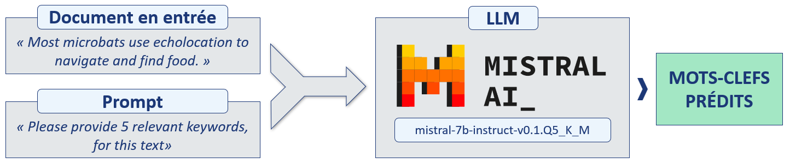
Pour des résultats plus précis, il est utile d'optimiser le prompt, notamment en fournissant au modèle un exemple préalable. Voici pour exemple le prompt utilisé pour ce projet :
prompt = f"""
<s>[INST]
Please provide {nb_tags} and only {nb_tags} relevant keywords, separated by a coma, for this text:
"how can i convert an array into a dataframe"
Please give me {nb_tags} most relevant keywords in this document and separate them with commas. Your reponse should be only: keyword 1, keyword 2, keyword 3, keyword 4, keyword 5
Make sure you to only return the {nb_tags} keywords and say nothing else. Not two, not four, just {nb_tags} keywords, no less, no more.
[/INST]pandas, dataFrame, array, python, conversion</s>
[INST]
Please provide {nb_tags} and only {nb_tags} relevant keywords, separated by a coma, for this text:
{document}
Please give me {nb_tags} most relevant keywords in this document and separate them with commas. Your reponse should be only: keyword 1, keyword 2, keyword 3, keyword 4, keyword 5
Make sure you to only return the {nb_tags} keywords and say nothing else. Not two, not four, just {nb_tags} keywords, no less, no more.
[/INST]
"""
Résultats de l'approche LLM
Faisons le bilan des trois approches : baseline, KeyBERT et Mistral.
Bilan des trois approches
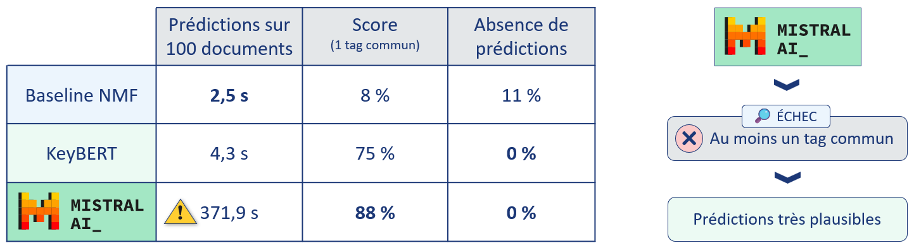
Les résultats fournis par Mistral sont excellents, avec des mots-clés prédits encore plus proches des mots-clés réels.
Et dans les cas où il n'y a pas de mot-clé en commun, les propositions du modèle sont très pertinentes.
Différence majeure avec la baseline et KeyBERT : il ne s'agit pas d'une simple extraction, les mots-clés proposés ne proviennent pas forcément du document.
Il y a une part d'interprétation, de reformulation, le modèle de langage comprend le document.
Bien entendu le terme « comprend » est une image, à ne pas confondre avec la compréhension humaine.
Coût d'un tel gain de performances : la durée de prédiction sur 100 documents est 86 fois plus élevée qu'avec KeyBERT, alors même que les calculs de Mistral ont été accélérés avec une carte graphique.
De plus, le LLM nécessite bien plus de mémoire RAM pour fonctionner, malgré l'utilisation d'une version quantifiée du modèle.
Mettre en production un modèle d'une telle complexité pour une simple tâche d'extraction de mots-clés est, à l'heure actuelle tout du moins, une option complètement démesurée.
Nous allons donc porter notre choix sur le modèle KeyBERT, dont le ratio coût/performances est bien plus intéressant.
Démo du nouveau concept
Dans le cadre de ce projet, pour faire une démonstration du concept, j'ai réalisé une application/dashboard avec Streamlit, une bibliothèque open-source en Python conçue pour créer facilement des applications web interactives (notamment les graphiques) et conviviales. Tout le code est disponible sur mon GitHub. L'application avait ensuite été intégrée dans une image Docker puis déployée dans une instance de conteneur sur Azure.
Application en action
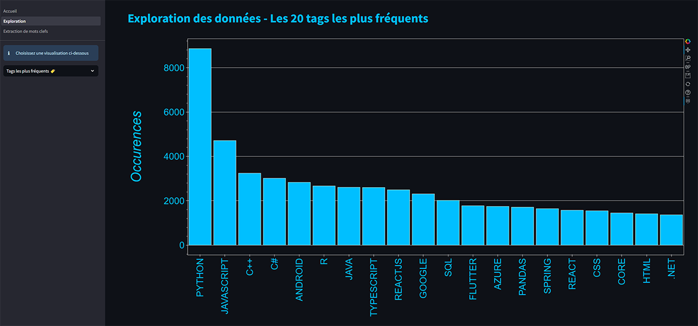
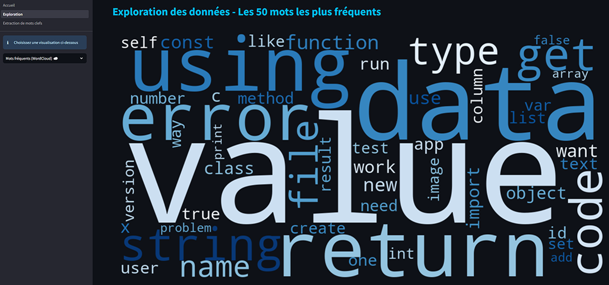
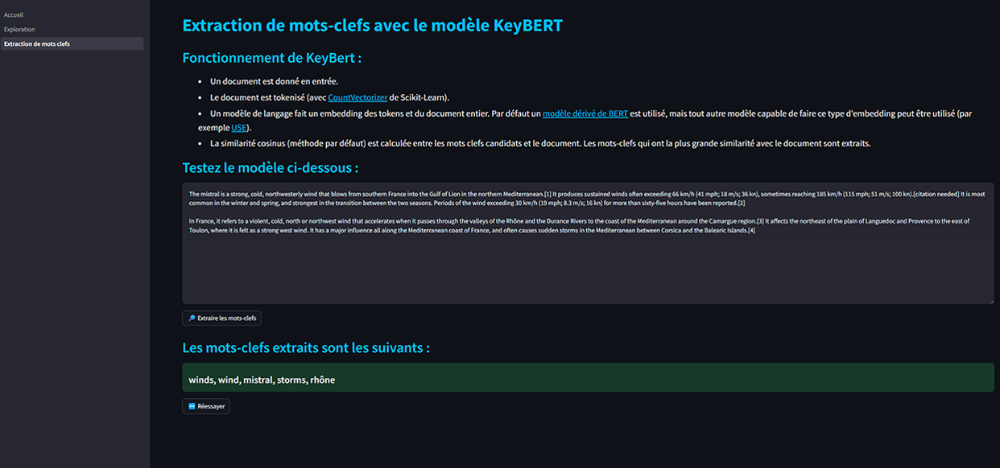
Conclusion
Nous avons atteint les objectifs que nous nous étions fixés, à savoir :
- Réaliser une veille afin d'identifier des modèles permettant d'améliorer les résultats du précédent projet.
- Évaluer ces modèles.
- Réaliser un dashboard pour faire une démo du nouveau concept.
Perspectives
À l'issue de ce travail, nous pouvons envisager les perspectives suivantes :
- Tester KeyBERT avec d'autres modèles d'embedding.
- Réentraîner partiellement ces modèles d'embedding sur des thématiques spécifiques.
- Tester d'autres modèles LLM moins coûteux en ressources.
- Réentraîner partiellement ces modèles LLM sur des thématiques spécifiques.